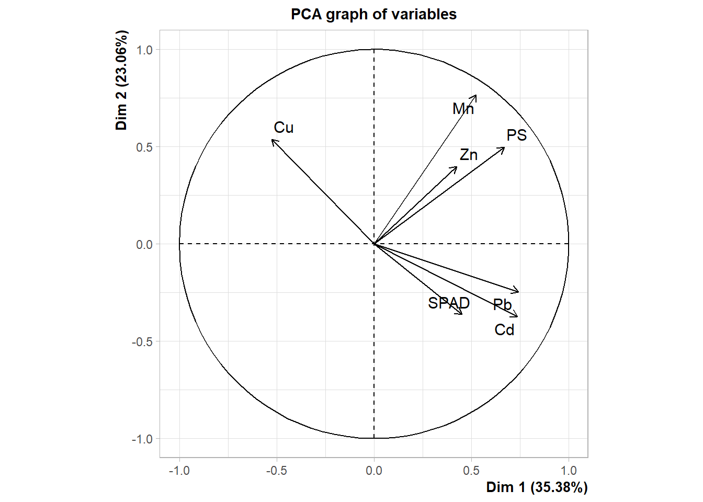

soja <- read_csv("produccion_soja_2023.csv")
# Dividiremos la base de datos en dos
mundo <- soja %>%
filter(Area == "World")
argentina <- soja %>%
filter(Area == "Argentina")Unidad 5. Otros tipos y parámetros gráficos
Gráficos de área
Para trabajar en de aquí en adelante utilizaremos otra base de datos. La misma la armé en base a los datos de superficie cultivada, producción y rendimiento de soja en Argentina y el mundo (extraída de informes de la FAO1) desde 1960 hasta 2023.
En primer lugar introduciremos un nuevo geom: geom_area. Como su nombre lo indica, permite graficar superficies completas en base a una escala continua. En este caso usaremos como eje x los años, como si fueran continuos. Así por ejemplo podemos graficar la variación de la superficie cultivada a lo largo del tiempo:
ggplot(argentina, aes(Year, Sup/1000000))+ # editamos la sup para no ver números tan grandes
geom_area(fill="cornflowerblue", col="gray21") +
scale_y_continuous(expand = c(0,0), breaks = seq(0, 25, by = 5))+
scale_x_continuous(expand = c(0,0),breaks = seq(1960,2025, by=5))+
labs(x= "Años",
y= "Superficie sembrada [millones de ha]") +
THEMEAhora supongamos que queremos graficar al mismo tiempo la superficie de Argentina y la global. Una opción sería dividir la variable Sup entre las regiones por fill.
ggplot(soja, aes(Year, Sup/1000000, fill=Area))+
geom_area(col="gray21") +
scale_y_continuous(expand = c(0,0), breaks = seq(0, 150, by = 10))+
scale_x_continuous(expand = c(0,0),breaks = seq(1960,2025, by=5))+
labs(x= "Años",
y= "Superficie sembrada [millones de ha]") +
THEMESi bien parece funcionar, al incluir esta opción geom_area apila los datos de una región con la otra. Por lo tanto, lo que vamos a hacer es superponer dos gráficos de área al mismo tiempo. Para ello introduciremos una nueva idea que es la de utilizar dos bases de datos diferentes en el mismo gráfico. Cuando creamos nuestro gráfico (ggplot(aes(…))) los geom que introduzcamos luego “heredan” tanto la base de datos como la estructura x-y determinada por aes que acompaña a ggplot. Si nuestro nuevo geom requiere una diferente, debemos expresamente introducirla. Finalmente, como la inclusión de nuevos geom no incorpora una leyenda, con la función annotate podemos introducir texto en algún lugar específico para clarificar qué significa cada área. También es posible introducir segmentos, flechas y otros elementos con esta función. Veamos cómo quedaría:
ggplot(mundo, aes(Year, Sup/1000000))+ # aes principal
geom_area(fill="burlywood3", col="gray21") + # primer área, es la que va al fondo
scale_y_continuous(expand = c(0,0), breaks = seq(0,120, by = 10))+
scale_x_continuous(expand = c(0,0),breaks = seq(1960,2025, by=5))+
labs(x= "Años",
y= "Superficie sembrada [millones de ha]") +
geom_area(data= argentina, aes(Year, Sup/1000000), # segunda, aparece al frente
fill="cornflowerblue", col="gray21")+
annotate("text", x=2008, y= 8, label = "Argentina", # agregamos texto en un lugar específico
size=6)+
annotate("text", x=1990, y= 35, label = "Mundo", size=6) +
THEMEEntonces ahora nos queda un idea mucho mejor de cómo a crecido la superficie sembrada de Argentina respecto a la del resto del mundo.
Aquí hemos expuesto otra de las funcionalidades que nos facilita ggplot2: introducir más de un geom a la vez. Este puede ser del mismo tipo o diferente, como veremos a continuación.
Combinando gráficos de distinto tipo
También puede resultarnos de utilidad combinar gráficos de dos tipos diferentes. Esta opción es muy útil y sencilla de utilizar, sin embargo hay un par de condiciones a cumplir:
- el eje x debe ser el mismo.
- el eje y también debe ser el mismo, o al menos ser “compatible” en escala (podría introducirse un eje secundario, pero excede al contenido de este taller).
Una vez cumplidas estas condiciones, es solo cuestión de usar nuestra creatividad para crear el mejor gráfico. Supongamos como ejemplo que queremos comparar el rendimiento de la soja en Argentina contra el promedio mundial. Podemos hacer un gráfico de columnas clasificando por región:
soja %>% mutate(Area=fct_recode(Area,
"Argentina"="Argentine", # modificamos los factores al español
"Mundo" ="World")) %>%
ggplot(aes(Year, Yield/1000, fill=Area))+
geom_col(position="dodge") +
scale_y_continuous(expand = c(0,0), breaks = seq(0,5, by = .5))+
scale_x_continuous(expand = c(0,0),breaks = seq(1960,2025, by=5))+
labs(x= "Años",
y= "Rendimiento [Tn/ha]")+
THEME +
theme(legend.position = c(.2,.85))Como vemos, de esta manera nos quedan demasiadas columnas y es muy difícil tener una idea clara del patrón. En cambio vamos a colocar el rendimiento global como puntos unidos por una línea. Para ello utilizaremos las bases de datos argentina y mundo. Además vemos que las comas del eje Y aparecen como puntos, lo modificaremos al formato del español:
ggplot(argentina, aes(Year, Yield/1000))+ # base de datos de argentina
geom_col(fill="cornflowerblue") + # creamos las columnas
scale_y_continuous(expand = c(0,0), breaks = seq(0,5, by = .5),
labels=function(x) format(x, decimal.mark = ",", # cambio . por ,
scientific = FALSE))+
scale_x_continuous(expand = c(0,0),breaks = seq(1960,2025, by=5))+
labs(x= "Años",
y= "Rendimiento [Tn/ha]")+
geom_line(data= mundo, aes(Year, Yield/1000), # segundo geom, del mundo
col="red")+
geom_point(data= mundo, aes(Year, Yield/1000), # tercer geom, de nuevo hay que especificar
col="red", size=2)+
annotate("text", x=1990, y= 2.5, label = "Argentina", col="cornflowerblue", size=5)+
annotate("text", x=1965, y= 1.6, label = "Mundo", col="red", size=5) +
THEMEAhora nos resulta mucho más fácil diferenciar en qué años (o períodos) el rendimiento fue mayor en Argentina que el promedio global.
Eje secundario
Si bien el uso de gráficos con ejes secundarios no fue planteado por el creador de ggplot2 por no considerarlo útil (idea que comparto), se puede incorporar mediante el parámetro sec.axis dentro de scale_y_continuos . Es importante destacar que este eje secundario se debe plantear como una transformación del eje primario. Esto limita fuertemente su uso, y en este curso simplemente aproximaremos una forma de hacerlo para ilustrar la segunda variable de una forma “aproximada”.
Supongamos que queremos graficar, siguiendo con nuestra base de datos, el rendimiento y la producción de soja en Argentina a lo largo del tiempo, en el mismo gráfico. Tomaremos como eje primario el de rendimiento, y secundario el de producción. Como un eje tiene que se una proporción del otro, creamos una nueva variable que nos indique la relación entre ellos:
argentina <- argentina %>%
mutate(Relacion = Production/(Yield/1000))Y luego utilizaremos el valor máximo de estar relación para graficar y que ambas variables se “observen” en una escala similar. Luego deberemos realizar una conversión de la escala a poner en el eje secundario siguiendo un patrón similar. Como vamos a usar la relación máxima entre rendimiento y producción, el valor graficado será aproximado ya que cada año dicha relación será diferente. Sin embargo, veremos que la aproximación es bastante buena y sirve de forma representativa.
ggplot(argentina, aes(x=Year))+ # especificamos el eje x
geom_col(aes(y=Yield/1000), # luego en cada geom el eje y
fill="darkolivegreen2") +
scale_y_continuous(expand = c(0,0), limits=c(0,3.5),
breaks = seq(0,5, by = .5),
sec.axis =
sec_axis(~.*max(argentina$Relacion)/1000000, #la relación de los ejes
name="Producción [millones de Tn]", # título
breaks=seq(0,65, by=5)))+
scale_x_continuous(expand = c(0,0),breaks = seq(1960,2023, by=5))+
labs(x= "Años",
y= "Rendimiento [Tn/ha]")+
geom_line(aes(y=Production/max(Relacion)),
col="blue3")+
geom_point(aes(y=Production/max(Relacion)),
col="blue3", size = 4)+
annotate("text", x=1990, y= 2.5, label = "Rendimiento", col="darkolivegreen4", size=6)+
annotate("text", x=2010, y= 1, label = "Producción", col="blue3", size=6) +
THEMEPivoteando (pivoting)
La última funcionalidad que veremos en este taller es el uso de pivot_longer y pivot_wider. Estas dos funciones tienen usos opuestos y veremos de a una cómo se usan, ya que nos permite transformar completamente la estructura de la base de datos, a partir de intercambiar columnas por filas (o viceversa).
pivot_longer
Nos permite agrupar diferentes variables (que tengamos en varias columnas) en una que contenga el nombre de la categoría (que antes era el nombre de una columna) y otra que contenga el valor numérico que corresponde a cada una. Nada mejor para ilustrarlo que un ejemplo. Recordemos nuestra base de datos soja que tenía esta estructura inicial:
head(soja)# A tibble: 6 × 6
Area Element Year Sup Production Yield
<chr> <chr> <dbl> <dbl> <dbl> <dbl>
1 Argentina Area harvested 1961 980 957 977
2 Argentina Area harvested 1962 9649 11220 1163
3 Argentina Area harvested 1963 19302 18920 980
4 Argentina Area harvested 1964 12220 14000 1146
5 Argentina Area harvested 1965 16422 17000 1035
6 Argentina Area harvested 1966 15689 18200 1160Supongamos ahora que queremos crear una columna que contenga en sus filas el tipo de parámetro que estamos midiendo (superficie, producción o rendimiento) y otra que contenga el valor del parámetro correspondiente. La estructura básica de pivot_longer es la siguiente:
pivot_longer(c(`variable_1`, `variable_2`, ... , `variable_n`), # variables a combinar
names_to = "Variables", # el titulo de la nueva columna con las variables
values_to = "Valor") # el título de la nueva columna con el valor numéricoNotar que el nombre de las variables se debe introducir entre tildes invertidas (`). En nuestro caso de ejemplo será:
soja %>% pivot_longer(c(`Sup`, `Yield`, `Production`),
names_to = "Variables",
values_to = "Valor")# A tibble: 378 × 5
Area Element Year Variables Valor
<chr> <chr> <dbl> <chr> <dbl>
1 Argentina Area harvested 1961 Sup 980
2 Argentina Area harvested 1961 Yield 977
3 Argentina Area harvested 1961 Production 957
4 Argentina Area harvested 1962 Sup 9649
5 Argentina Area harvested 1962 Yield 1163
6 Argentina Area harvested 1962 Production 11220
7 Argentina Area harvested 1963 Sup 19302
8 Argentina Area harvested 1963 Yield 980
9 Argentina Area harvested 1963 Production 18920
10 Argentina Area harvested 1964 Sup 12220
# ℹ 368 more rowspivot_wider
La función pivot_wider hace exactamente lo contrario que pivot_longer, nos permite a partir de una columna con varios niveles de un factor, crear múltiples columnas (una para cada nivel del factor). Para utilizarla, cada fila que tengamos tiene que ser única (es decir, lo elementos que no son variables respuestas no pueden ser los mismos entre dos filas) para que no se genere confusión. La estructura general es la siguiente:
pivot_wider(names_from = variable, # variable a dividir
values_from = Valor) # variable respuesta numérica a repartirEntonces, a modo de ejemplo, supongamos que queremos comparar como se ha incrementado la producción de soja en Argentina y el mundo desde 1961 hasta 2023. Para ello podemos primero seleccionar las variables de interés (solo nos interesa la producción), después filtrar los años de interés y crear nuevas columnas.
soja %>% select(Area, Year, Production) %>% # seleccionamos
filter(Year==1961 | Year==2023) %>% # filtramos
pivot_wider(names_from = Year, values_from = Production) %>% # repartimos en columnas
mutate(Prop= round(`2023`/`1961`, 0)) # transformamos con las variables entre ` `# A tibble: 2 × 4
Area `1961` `2023` Prop
<chr> <dbl> <dbl> <dbl>
1 Argentina 957 25044978 26170
2 World 26883158 371173609 14Podemos ver como en Argentina en el último medio siglo se incrementó la producción 26170 veces, mientras que a nivel global 1381 veces.
Estas funciones tienen diferentes usos. Como vimos, pivot_wider puede servirnos para convertir variables y comparar niveles de un factor. pivot_longer puede servir tanto para corregir bases mal armadas como para generar nuevos criterios de clasificación que pueden ser útiles en algunos gráficos.
Por ejemplo final, supongamos que queremos ver en un mismo gráfico qué porcentaje de la producción global y de la superficie global sembrada representa Argentina. Para ello vamos a:
- seleccionar las columnas de interés
- unir producción y superficie en una única columna (
pivot_longer) - dividir Argentina y Mundo en dos columnas (
pivot_wider) - calcular la proporción que representa Argentina del global y con ella el porcentaje
- graficar aplicando como criterio de clasificación del color la columna que especifica si se trata de producción o superficie.
Quedaría de la siguiente manera:
soja %>%
select(Area, Year, Sup, Production)%>%
pivot_longer(c(`Sup`, `Production`), names_to = "variable", values_to = "value") %>%
pivot_wider(names_from = Area, values_from = value) %>%
mutate(
prop = Argentina/World,
porc = prop*100 # notar que podemos usar la variable recién creada
)%>%
ggplot(aes(Year, porc, col=variable))+
geom_point()+
geom_line()+
scale_y_continuous(limits=c(0,30),expand = c(0,0), breaks = seq(0, 25, by = 2))+
scale_x_continuous(expand = c(0,0),breaks = seq(1960,2025, by=5))+
labs(x= "Años",
y= "Porcentaje del global")+
scale_colour_manual(values=c("Sup"= "blue4","Production"="red"), guide= "none")+
annotate("text", x=2007, y=10, label="Superficie\ncultivada", col="blue4", size=5)+
annotate("text", x=1995, y=18, label="Producción", col="red", size=5) +
THEMEGráficos de biplot para análisis multivariado
Esta sección tiene por objetivo mostrar que el conocimiento de los gráficos con ggplot2 sobrepasan al uso individual de este paquete, sino que hay mucho otros que se basan en él para generar gráficos. Un ejemplo de ello es el paquete factoextra para gráficos multivariados.
Vamos a desarrollar un ejemplo donde armamos un biplot a partir de un análisis de componentes principales (PCA). Vamos a retomar a la base de datos ALIM, y haremos un PCA comparando la concentración de distintos metales en los órganos, su peso seco y verdor. Para ello ejecutamos:
library(factoextra);library(FactoMineR);library(ggrepel)Welcome! Want to learn more? See two factoextra-related books at https://goo.gl/ve3WBa
Attaching package: 'factoextra'The following object is masked from 'package:agricolae':
hcutres.pca <- PCA(ALIM[, -c(1:5)], scale.unit = TRUE)
Una vez creado el objeto de resultado de nuestro PCA, vamos a realizar un gráfico de biplot con la función fviz_pca_biplot de factoextra:
BIPLOT <- fviz_pca_biplot(res.pca,
repel = TRUE,
geom.ind = "point",
col.var = "deeppink4",
col.ind = "black",
labelsize=5,
axes.linetype = "blank",
alpha.var=0.5,
title = NULL) ; BIPLOTAhora vamos a realizar algunas modificaciones estéticas, y a incluir una clasificación por color según el órgano de el que se trate. Para ello vamos a crear un objeto nuevo con los porcentajes de explicación de cada eje:
VARIANCE <- round(get_eigenvalue(res.pca)[,2], 2)
BIPLOT +
geom_point(aes(col = ALIM$Organo),size = 4)+
geom_hline(yintercept = 0, linetype = "dotted", col = "grey30")+
geom_vline(xintercept = 0, linetype = "dotted", col = "grey30")+
labs(x = paste("PC 1 (", VARIANCE[[1]], "%)"),
y = paste("PC 2 (", VARIANCE[[2]], "%)"),
col = "Órgano") +
scale_y_continuous(expand = c(0,0), limits = c(-3,3),
breaks = seq(-40,40, by = 1))+
scale_x_continuous(expand = c(0,0), limits = c(-5.5,5.5),
breaks = seq(-9,9, by = 2)) +
scale_colour_viridis_d() +
THEMEFootnotes
FAOSTATS. https://www.fao.org/faostat/en/#data/QCL↩︎